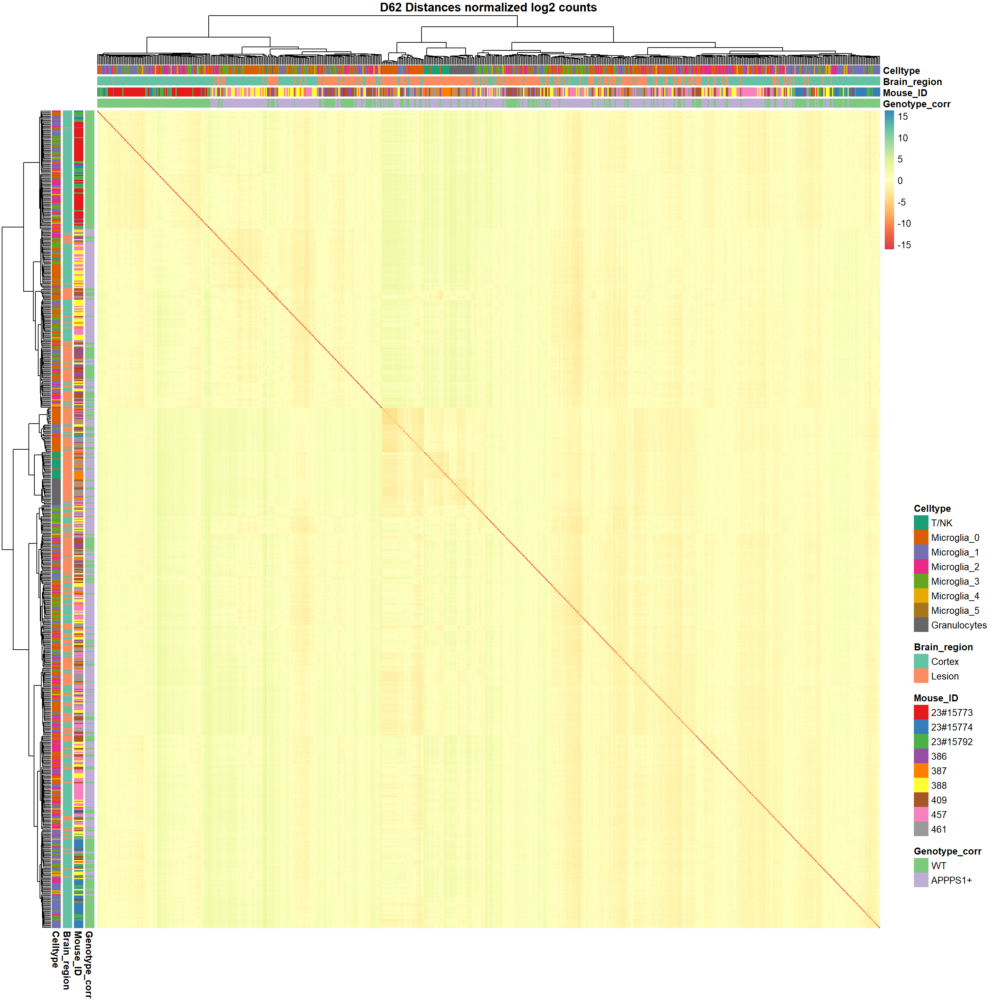

Last updated: 2022-02-03
Checks: 7 0
Knit directory: S:/KJP_Biolabor/Projects/scSeq_Hefendehl/
This reproducible R Markdown analysis was created with workflowr (version 1.7.0). The Checks tab describes the reproducibility checks that were applied when the results were created. The Past versions tab lists the development history.
Great! Since the R Markdown file has been committed to the Git repository, you know the exact version of the code that produced these results.
Great job! The global environment was empty. Objects defined in the global environment can affect the analysis in your R Markdown file in unknown ways. For reproduciblity it’s best to always run the code in an empty environment.
The command set.seed(20220131) was run prior to running the code in the R Markdown file. Setting a seed ensures that any results that rely on randomness, e.g. subsampling or permutations, are reproducible.
Great job! Recording the operating system, R version, and package versions is critical for reproducibility.
Nice! There were no cached chunks for this analysis, so you can be confident that you successfully produced the results during this run.
Great job! Using relative paths to the files within your workflowr project makes it easier to run your code on other machines.
Great! You are using Git for version control. Tracking code development and connecting the code version to the results is critical for reproducibility.
The results in this page were generated with repository version 64cd37c. See the Past versions tab to see a history of the changes made to the R Markdown and HTML files.
Note that you need to be careful to ensure that all relevant files for the analysis have been committed to Git prior to generating the results (you can use wflow_publish or wflow_git_commit). workflowr only checks the R Markdown file, but you know if there are other scripts or data files that it depends on. Below is the status of the Git repository when the results were generated:
Ignored files:
Ignored: .Rproj.user/
Ignored: data/ReloadAllData_Hefendehl_Stroke_Dec'21.RData
Ignored: data/Sample_Tables/
Ignored: data/counts.csv
Ignored: data/genecounts.csv
Ignored: data/microglia_protein.rds
Ignored: data/samples.integrated.RData
Ignored: data/tx2genes.csv
Untracked files:
Untracked: workflow_helper.R
Note that any generated files, e.g. HTML, png, CSS, etc., are not included in this status report because it is ok for generated content to have uncommitted changes.
There are no past versions. Publish this analysis with wflow_publish() to start tracking its development.
#get sample data
samples.integrated@meta.data %>% as.data.frame() -> samplemeta
# convert to correct data type
# define gentype as is
samplemeta$Genotype_corr = factor(samplemeta$Genotype=="wt", levels=c(F,T), labels = c("APPPS1+", "WT"))
samplemeta$Genotype_corr = relevel(samplemeta$Genotype_corr, ref="WT")
samplemeta$methoxy = factor(samplemeta$Genotype=="MX04+", levels=c(T,F), labels = c("MX04+", "MX04-"))
samplemeta$Treatment = as.factor(samplemeta$Treatment)
samplemeta$Treatment = relevel(samplemeta$Treatment, ref="Ctrl")
samplemeta$Mouse_ID = as.factor(samplemeta$Mouse_ID)
samplemeta$Sex = as.factor(samplemeta$Sex)
samplemeta$Brain_region = as.factor(samplemeta$Brain_region)
samplemeta$Celltype = as.factor(samplemeta$Celltype)
nCells=nrow(samplemeta)
nMice=nlevels(samplemeta$Mouse_ID)
nCelltypes=nlevels(samplemeta$Celltype)Data contains a total of 649 Cells from 9. Q: Original raw datset containing only frankfurt data included 1149 cells. What were the filter criteria in the primary cell type analysis
Cells per Mouse
table(Mouse_ID=samplemeta$Mouse_ID) %>% as.data.frame() %>% display_tab()| Mouse_ID | Freq |
|---|---|
| 23#15773 | 66 |
| 23#15774 | 49 |
| 23#15792 | 47 |
| 386 | 41 |
| 387 | 44 |
| 388 | 113 |
| 409 | 86 |
| 457 | 115 |
| 461 | 88 |
Cells per Strain
table(Strain=samplemeta$Genotype_corr, Treatment=samplemeta$Treatment) %>% as.data.frame() %>% display_tab()| Strain | Treatment | Freq |
|---|---|---|
| WT | Ctrl | 162 |
| APPPS1+ | Ctrl | 228 |
| WT | Stroke | 127 |
| APPPS1+ | Stroke | 132 |
table(Strain=samplemeta$Genotype_corr, Celltype=samplemeta$Celltype) %>%
as.data.frame() %>% display_tab()| Strain | Celltype | Freq |
|---|---|---|
| WT | T/NK | 3 |
| APPPS1+ | T/NK | 19 |
| WT | Microglia_0 | 66 |
| APPPS1+ | Microglia_0 | 120 |
| WT | Microglia_1 | 93 |
| APPPS1+ | Microglia_1 | 71 |
| WT | Microglia_2 | 51 |
| APPPS1+ | Microglia_2 | 56 |
| WT | Microglia_3 | 44 |
| APPPS1+ | Microglia_3 | 55 |
| WT | Microglia_4 | 15 |
| APPPS1+ | Microglia_4 | 11 |
| WT | Microglia_5 | 11 |
| APPPS1+ | Microglia_5 | 12 |
| WT | Granulocytes | 6 |
| APPPS1+ | Granulocytes | 16 |
variables=c("Celltype","Sex", "Genotype_corr", "Treatment","Phase", "Brain_region","nCount_RNA","pseudoaligned_reads", "percent.mito", "percent.ribo", "Mouse_ID")
res = compareGroups(Celltype~., data = samplemeta[,variables], max.ylev = 10)
#summary(res)
export_table <- createTable(res)
export_table
--------Summary descriptives table by 'Celltype'---------
_____________________________________________________________________________________________________________________________________________________
T/NK Microglia_0 Microglia_1 Microglia_2 Microglia_3 Microglia_4 Microglia_5 Granulocytes p.overall
N=22 N=186 N=164 N=107 N=99 N=26 N=23 N=22
¯¯¯¯¯¯¯¯¯¯¯¯¯¯¯¯¯¯¯¯¯¯¯¯¯¯¯¯¯¯¯¯¯¯¯¯¯¯¯¯¯¯¯¯¯¯¯¯¯¯¯¯¯¯¯¯¯¯¯¯¯¯¯¯¯¯¯¯¯¯¯¯¯¯¯¯¯¯¯¯¯¯¯¯¯¯¯¯¯¯¯¯¯¯¯¯¯¯¯¯¯¯¯¯¯¯¯¯¯¯¯¯¯¯¯¯¯¯¯¯¯¯¯¯¯¯¯¯¯¯¯¯¯¯¯¯¯¯¯¯¯¯¯¯¯¯¯¯¯
Sex: .
f 6 (27.3%) 27 (14.5%) 21 (12.8%) 11 (10.3%) 11 (11.1%) 1 (3.85%) 2 (8.70%) 8 (36.4%)
m 16 (72.7%) 159 (85.5%) 143 (87.2%) 96 (89.7%) 88 (88.9%) 25 (96.2%) 21 (91.3%) 14 (63.6%)
Genotype_corr: <0.001
WT 3 (13.6%) 66 (35.5%) 93 (56.7%) 51 (47.7%) 44 (44.4%) 15 (57.7%) 11 (47.8%) 6 (27.3%)
APPPS1+ 19 (86.4%) 120 (64.5%) 71 (43.3%) 56 (52.3%) 55 (55.6%) 11 (42.3%) 12 (52.2%) 16 (72.7%)
Treatment: <0.001
Ctrl 3 (13.6%) 101 (54.3%) 113 (68.9%) 70 (65.4%) 68 (68.7%) 21 (80.8%) 12 (52.2%) 2 (9.09%)
Stroke 19 (86.4%) 85 (45.7%) 51 (31.1%) 37 (34.6%) 31 (31.3%) 5 (19.2%) 11 (47.8%) 20 (90.9%)
Phase: 0.002
G1 1 (4.55%) 79 (42.5%) 70 (42.7%) 59 (55.1%) 42 (42.4%) 12 (46.2%) 14 (60.9%) 5 (22.7%)
G2M 11 (50.0%) 50 (26.9%) 38 (23.2%) 17 (15.9%) 21 (21.2%) 6 (23.1%) 4 (17.4%) 11 (50.0%)
S 10 (45.5%) 57 (30.6%) 56 (34.1%) 31 (29.0%) 36 (36.4%) 8 (30.8%) 5 (21.7%) 6 (27.3%)
Brain_region: <0.001
Cortex 3 (13.6%) 101 (54.3%) 113 (68.9%) 70 (65.4%) 68 (68.7%) 21 (80.8%) 12 (52.2%) 2 (9.09%)
Lesion 19 (86.4%) 85 (45.7%) 51 (31.1%) 37 (34.6%) 31 (31.3%) 5 (19.2%) 11 (47.8%) 20 (90.9%)
nCount_RNA 164049 (80916) 150451 (78955) 134224 (54802) 170420 (76702) 152640 (72678) 172200 (70772) 176087 (64299) 144828 (65899) 0.002
pseudoaligned_reads 165078 (81748) 150942 (78850) 134355 (54810) 170750 (76639) 152790 (72668) 172433 (70717) 176390 (64225) 145316 (65972) 0.002
percent.mito 2.23 (0.90) 1.75 (1.17) 1.62 (1.01) 2.07 (1.07) 1.72 (1.15) 1.97 (1.02) 2.11 (0.77) 0.92 (1.00) <0.001
percent.ribo 6.53 (2.72) 2.68 (1.58) 2.75 (1.81) 2.44 (1.24) 3.28 (1.67) 2.11 (0.85) 2.91 (1.35) 2.01 (1.17) <0.001
Mouse_ID: .
23#15773 0 (0.00%) 7 (3.76%) 25 (15.2%) 12 (11.2%) 17 (17.2%) 4 (15.4%) 1 (4.35%) 0 (0.00%)
23#15774 0 (0.00%) 1 (0.54%) 30 (18.3%) 10 (9.35%) 6 (6.06%) 1 (3.85%) 1 (4.35%) 0 (0.00%)
23#15792 1 (4.55%) 11 (5.91%) 13 (7.93%) 9 (8.41%) 6 (6.06%) 6 (23.1%) 1 (4.35%) 0 (0.00%)
386 1 (4.55%) 14 (7.53%) 9 (5.49%) 2 (1.87%) 6 (6.06%) 1 (3.85%) 5 (21.7%) 3 (13.6%)
387 11 (50.0%) 10 (5.38%) 5 (3.05%) 6 (5.61%) 5 (5.05%) 0 (0.00%) 1 (4.35%) 6 (27.3%)
388 1 (4.55%) 41 (22.0%) 21 (12.8%) 18 (16.8%) 21 (21.2%) 5 (19.2%) 6 (26.1%) 0 (0.00%)
409 1 (4.55%) 33 (17.7%) 16 (9.76%) 18 (16.8%) 9 (9.09%) 3 (11.5%) 3 (13.0%) 3 (13.6%)
457 1 (4.55%) 41 (22.0%) 24 (14.6%) 21 (19.6%) 18 (18.2%) 5 (19.2%) 3 (13.0%) 2 (9.09%)
461 6 (27.3%) 28 (15.1%) 21 (12.8%) 11 (10.3%) 11 (11.1%) 1 (3.85%) 2 (8.70%) 8 (36.4%)
¯¯¯¯¯¯¯¯¯¯¯¯¯¯¯¯¯¯¯¯¯¯¯¯¯¯¯¯¯¯¯¯¯¯¯¯¯¯¯¯¯¯¯¯¯¯¯¯¯¯¯¯¯¯¯¯¯¯¯¯¯¯¯¯¯¯¯¯¯¯¯¯¯¯¯¯¯¯¯¯¯¯¯¯¯¯¯¯¯¯¯¯¯¯¯¯¯¯¯¯¯¯¯¯¯¯¯¯¯¯¯¯¯¯¯¯¯¯¯¯¯¯¯¯¯¯¯¯¯¯¯¯¯¯¯¯¯¯¯¯¯¯¯¯¯¯¯¯¯ #get normalized counts
# question to Desiree hat the Seurat object been initialized with normalized data?
counts <- samples.integrated@assays$RNA@counts %>% as.data.frame()
# drop no variance data and sort by samplemeta
counts <- counts[apply(counts,1, sd) > 0, rownames(samplemeta)]
# drop genes with low detection rate (more than 5 counts per cell)
counts_per_celltype=apply(counts, 1, function(x){tapply(x, samplemeta$Celltype, function(z){sum(z>5,na.rm=T)})})
# keep RNAs with at least 5 cells with goood expression
idx=which(colSums(counts_per_celltype)>5)
counts = counts[idx,]to check where the variance in the data comes from
log2_cpm = log2(counts+1)
varsset=apply(log2_cpm, 1, var)
cpm.sel.trans = t(log2_cpm[order(varsset,decreasing = T)[1:2000],])
distance = dist(cpm.sel.trans)
sampleDistMatrix <- as.matrix(distance)
#colors for plotting heatmap
colors <- colorRampPalette(brewer.pal(9, "Spectral"))(255)
cellcol = Dark8[1:nlevels(samplemeta$Celltype)]
names(cellcol) = levels(samplemeta$Celltype)
genotypecol = brewer.pal(4,"Accent")[c(1:nlevels(samplemeta$Genotype_corr))]
names(genotypecol) = levels(samplemeta$Genotype_corr)
mousecol = brewer.pal(9,"Set1")[1:nlevels(samplemeta$Mouse_ID)]
names(mousecol) = levels(samplemeta$Mouse_ID)
braincol = brewer.pal(3,"Set2")[1:nlevels(samplemeta$Brain_region)]
names(braincol) = levels(samplemeta$Brain_region)
ann_colors = list(
Genotype_corr = genotypecol,
Mouse_ID = mousecol,
Brain_region = braincol,
Celltype=cellcol
)
labels = samplemeta[,c("Genotype_corr","Mouse_ID", "Brain_region", "Celltype")] %>%
mutate_all(as.character) %>% as.data.frame()
rownames(labels)=rownames(samplemeta)
pheatmap(sampleDistMatrix,
clustering_distance_rows = distance,
clustering_distance_cols = distance,
clustering_method = "ward.D2",
scale ="row",
show_rownames=F, show_colnames = F,
legend=T,
border_color = NA,
annotation_row = labels,
annotation_col = labels,
annotation_colors = ann_colors,
col = colors,
main = "D62 Distances normalized log2 counts")
sessionInfo()R version 4.1.2 (2021-11-01)
Platform: x86_64-w64-mingw32/x64 (64-bit)
Running under: Windows 10 x64 (build 18363)
Matrix products: default
locale:
[1] LC_COLLATE=German_Germany.1252 LC_CTYPE=German_Germany.1252
[3] LC_MONETARY=German_Germany.1252 LC_NUMERIC=C
[5] LC_TIME=German_Germany.1252
attached base packages:
[1] stats4 stats graphics grDevices utils datasets methods
[8] base
other attached packages:
[1] pheatmap_1.0.12 RColorBrewer_1.1-2
[3] kableExtra_1.3.4 compareGroups_4.5.1
[5] data.table_1.14.2 SingleR_1.8.1
[7] SeuratObject_4.0.4 Seurat_4.1.0
[9] forcats_0.5.1 stringr_1.4.0
[11] dplyr_1.0.7 purrr_0.3.4
[13] readr_2.1.2 tidyr_1.1.4
[15] tibble_3.1.6 ggplot2_3.3.5
[17] tidyverse_1.3.1 DESeq2_1.34.0
[19] SummarizedExperiment_1.24.0 Biobase_2.54.0
[21] MatrixGenerics_1.6.0 matrixStats_0.61.0
[23] GenomicRanges_1.46.1 GenomeInfoDb_1.30.1
[25] IRanges_2.28.0 S4Vectors_0.32.3
[27] BiocGenerics_0.40.0 limma_3.50.0
[29] workflowr_1.7.0
loaded via a namespace (and not attached):
[1] scattermore_0.7 bit64_4.0.5
[3] knitr_1.37 irlba_2.3.5
[5] DelayedArray_0.20.0 rpart_4.1.16
[7] KEGGREST_1.34.0 RCurl_1.98-1.5
[9] generics_0.1.2 ScaledMatrix_1.2.0
[11] callr_3.7.0 cowplot_1.1.1
[13] RSQLite_2.2.9 mice_3.14.0
[15] RANN_2.6.1 future_1.23.0
[17] chron_2.3-56 bit_4.0.4
[19] tzdb_0.2.0 spatstat.data_2.1-2
[21] webshot_0.5.2 xml2_1.3.3
[23] lubridate_1.8.0 httpuv_1.6.5
[25] assertthat_0.2.1 xfun_0.29
[27] hms_1.1.1 jquerylib_0.1.4
[29] evaluate_0.14 promises_1.2.0.1
[31] fansi_1.0.2 dbplyr_2.1.1
[33] readxl_1.3.1 igraph_1.2.11
[35] DBI_1.1.2 geneplotter_1.72.0
[37] Rsolnp_1.16 htmlwidgets_1.5.4
[39] spatstat.geom_2.3-1 ellipsis_0.3.2
[41] backports_1.4.1 annotate_1.72.0
[43] deldir_1.0-6 sparseMatrixStats_1.6.0
[45] vctrs_0.3.8 ROCR_1.0-11
[47] abind_1.4-5 cachem_1.0.6
[49] withr_2.4.3 HardyWeinberg_1.7.4
[51] sctransform_0.3.3 goftest_1.2-3
[53] svglite_2.0.0 cluster_2.1.2
[55] lazyeval_0.2.2 crayon_1.4.2
[57] genefilter_1.76.0 pkgconfig_2.0.3
[59] nlme_3.1-155 nnet_7.3-17
[61] rlang_1.0.0 globals_0.14.0
[63] lifecycle_1.0.1 miniUI_0.1.1.1
[65] modelr_0.1.8 rsvd_1.0.5
[67] cellranger_1.1.0 rprojroot_2.0.2
[69] polyclip_1.10-0 lmtest_0.9-39
[71] flextable_0.6.10 Matrix_1.4-0
[73] zoo_1.8-9 reprex_2.0.1
[75] base64enc_0.1-3 whisker_0.4
[77] ggridges_0.5.3 processx_3.5.2
[79] png_0.1-7 viridisLite_0.4.0
[81] bitops_1.0-7 getPass_0.2-2
[83] KernSmooth_2.23-20 Biostrings_2.62.0
[85] blob_1.2.2 DelayedMatrixStats_1.16.0
[87] parallelly_1.30.0 beachmat_2.10.0
[89] scales_1.1.1 memoise_2.0.1
[91] magrittr_2.0.2 plyr_1.8.6
[93] ica_1.0-2 zlibbioc_1.40.0
[95] compiler_4.1.2 fitdistrplus_1.1-6
[97] cli_3.1.1 XVector_0.34.0
[99] listenv_0.8.0 patchwork_1.1.1
[101] pbapply_1.5-0 ps_1.6.0
[103] MASS_7.3-55 mgcv_1.8-38
[105] tidyselect_1.1.1 stringi_1.7.6
[107] highr_0.9 yaml_2.2.2
[109] BiocSingular_1.10.0 locfit_1.5-9.4
[111] ggrepel_0.9.1 grid_4.1.2
[113] sass_0.4.0 tools_4.1.2
[115] future.apply_1.8.1 parallel_4.1.2
[117] rstudioapi_0.13 uuid_1.0-3
[119] git2r_0.29.0 gridExtra_2.3
[121] farver_2.1.0 Rtsne_0.15
[123] digest_0.6.29 shiny_1.7.1
[125] Rcpp_1.0.8 broom_0.7.12
[127] later_1.3.0 writexl_1.4.0
[129] RcppAnnoy_0.0.19 httr_1.4.2
[131] gdtools_0.2.3 AnnotationDbi_1.56.2
[133] colorspace_2.0-2 rvest_1.0.2
[135] XML_3.99-0.8 fs_1.5.2
[137] tensor_1.5 reticulate_1.24
[139] truncnorm_1.0-8 splines_4.1.2
[141] uwot_0.1.11 spatstat.utils_2.3-0
[143] plotly_4.10.0 systemfonts_1.0.3
[145] xtable_1.8-4 jsonlite_1.7.3
[147] R6_2.5.1 pillar_1.7.0
[149] htmltools_0.5.2 mime_0.12
[151] glue_1.6.1 fastmap_1.1.0
[153] BiocParallel_1.28.3 BiocNeighbors_1.12.0
[155] codetools_0.2-18 utf8_1.2.2
[157] lattice_0.20-45 bslib_0.3.1
[159] spatstat.sparse_2.1-0 leiden_0.3.9
[161] officer_0.4.1 zip_2.2.0
[163] survival_3.2-13 rmarkdown_2.11
[165] munsell_0.5.0 GenomeInfoDbData_1.2.7
[167] haven_2.4.3 reshape2_1.4.4
[169] gtable_0.3.0 spatstat.core_2.3-2